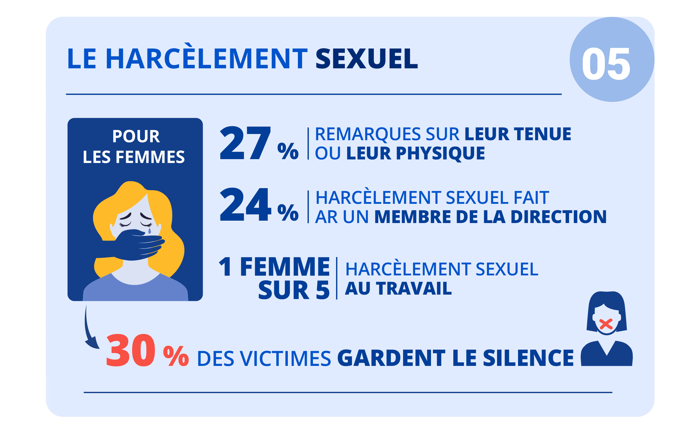

Chiffres
Conseils
Aide
Chiffres
Le harcèlement peut être sexuel et/ou moral. Dans la plupart des cas, le harcèlement survient au sein d’un couple ou sur le lieu de travail. Les enfants sont aussi concernés à l’école. En novembre 2019, l’Unicef annonce plus de 700 000 élèves victimes de harcèlement scolaire dont les actes sont répartis suivant cette liste :
- 12 % en primaire ;
- 10 % au collège ;
- 4 % au lycée.

Conseils
Nous proposons une évolution de la loi à propos de ce sujet :- Loi actuelle :
- Harcèlement sexuel : Le harcèlement sexuel simple est puni, à titre principal, d'une peine de deux ans d'emprisonnement et de 30 000 € d'amende.
- Harcèlement moral : Le harcèlement moral au travail est puni de deux ans d'emprisonnement et de 30 000 € d'amende.
- Proposition de Loi:
- Rendre la peine commune à tout type d'harcèlement.
- 3 ans d'emprisonnement.
- 100 000 € d'amende.
- Apposition d'un macaron sur le profile des réseau sociaux du coupable pour indiquer aux autres utilisateurs le passif de l'individus dangereux. (Condition : Si récidive et ne montre aucun repenti.)
En cas de harcèlement moral au travail, la victime peut prévenir les représentants du personnel, le CSE, l’inspection du travail ou le défenseur des droits, recourir à la médiation ou encore saisir le Conseil de prud’hommes ou la justice pénale. Pour les autres formes de harcèlements, la victime peut porter plainte auprès des forces de l’ordre ou du procureur de la République ou encore demander des conseils auprès des organismes d’aide aux victimes de harcèlement.
-
Identifier le harcèlement :
Il se caractérise par l'action répétée de violences d'une ou plusieurs personnes envers une cible. Les violences sont souvent verbales au début mais elles peuvent également être physiques et surtout morales. Cela se traduit par des insultes, des moqueries, des coups, mais aussi des gestes dévalorisant. La personne harcelée, par conséquent, perd confiance en elle et se sent dévalorisée. -
En parler aux personnes de confiance :
Bien souvent, les personnes harcelées sont victimes d'un effet boule de neige et leurs agresseurs se liguent contre elles. Il s'agit alors de la pression de groupe, qui peut conduire à un comportement dépressif. Elles doivent alors se tourner vers les amis proches, leur famille. -
Se méfier des réseaux sociaux :
Depuis quelques années et la montée en puissance des réseaux sociaux auprès des jeunes générations, le harcèlement se mue en cyberharcèlement. Pour éviter de tomber dans un piège, mieux vaut ne jamais envoyer une photo de soi, surtout peu conventionnelle (dénudé, etc...) à quiconque. Pour rappel, photographier ou filmer, sans son consentement une personne ou transmettre son image est passible d'un an d'emprisonnement et de 45 000 € d'amende ». -
Être lanceur d'alerte plutôt que témoin passif :
En dehors de la personne harcelée et de ses bourreaux, d'autres individus qui la fréquentent au quotidien peuvent interagir dans le processus de harcèlement. Il s'agit des témoins. Souvent passifs, ils ne participent pas à l'action de harcèlement mais leur silence fait d'eux des complices. -
Contacter les numéros d'urgence :
En cas de grande difficulté à parler de ses problèmes à ses proches, d'autres solutions existent. Depuis trois ans, le gouvernement a mis en place un numéro vert (gratuit) pour signaler le harcèlement : le 30 20. À son lancement, 250 référents ont été mis en place dans les académies pour recueillir les différentes situations. Enfin, le 0 800 200 000 est le numéro vert de Net écoute est destiné aux enfants et adolescents confrontés à des problèmes dans leurs usages numériques (de 9 heures à 19 heures du lundi au vendredi).